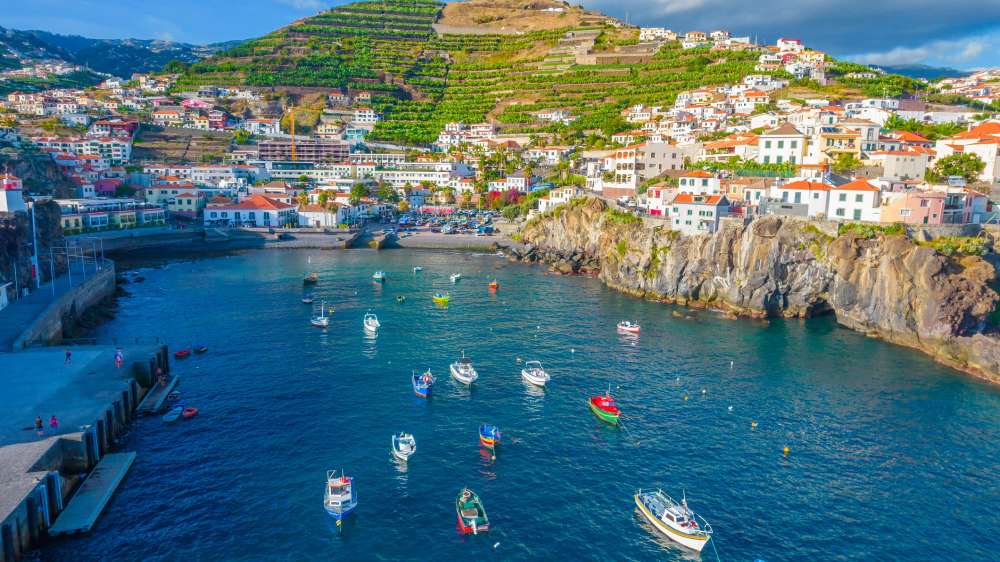

Meine Traumreiseziele
Drei aussergewöhnliche Orte, die ich unbedingt besuchen möchte

Madeira, Portugal
üåç Atlantischer Ozean
Die "Insel des ewigen Frühlings" verzaubert mit dramatischen Klippen, üppigen Lorbeerwäldern und einer einzigartigen Levada-Wanderkultur.
Highlights:
- Levada-Wanderungen durch Urwälder
- Cabo Girão - Europas höchste Klippe
- Funchal's bunte Märkte
- Madeira-Wein Verkostungen
Fun Fact: Madeira hat über 1.000km Levadas
(Bewässerungskanäle), die als Wanderwege genutzt werden!

Bali, Indonesien
üåç S√ºdostasien
Die "Insel der Götter" bietet eine perfekte Mischung aus spiritueller Kultur, tropischen Stränden und atemberaubenden Reisterrassen.
Highlights:
- Jatiluwih Reisterrassen
- Tanah Lot Tempel bei Sonnenuntergang
- Ubud's Affenwald
- Traditionelle Balinese Spa-Behandlungen
Fun Fact: Bali hat über 20.000 Tempel und
Schreine - das sind mehr als Einwohner in manchen Dörfern!

Panama City, Panama
üåç Zentralamerika
Eine faszinierende Mischung aus kolonialer Geschichte und moderner Architektur, verbunden durch den berühmten Panamakanal.
Highlights:
- Panamakanal und Miraflores Schleusen
- Casco Viejo - UNESCO Weltkulturerbe
- Moderne Skyline von Punta Pacifica
- Mercado de Mariscos für frische Meeresfrüchte
Fun Fact: Panama City ist die einzige
Hauptstadt der Welt, die einen Regenwald innerhalb ihrer
Stadtgrenzen hat!